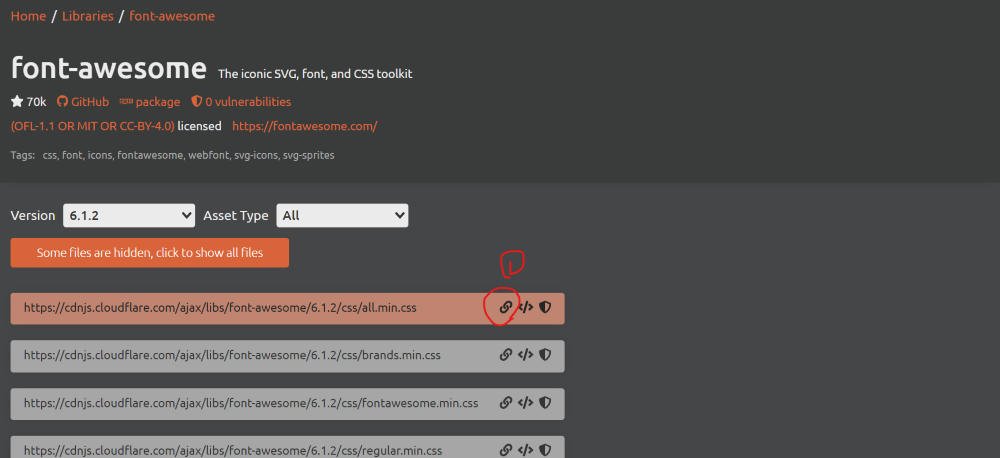
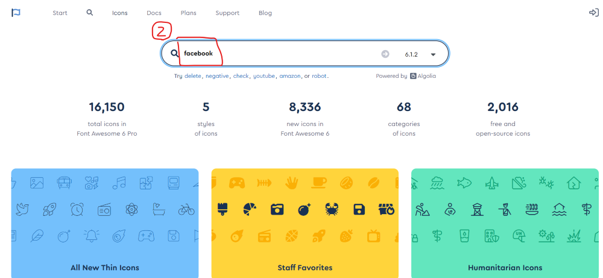
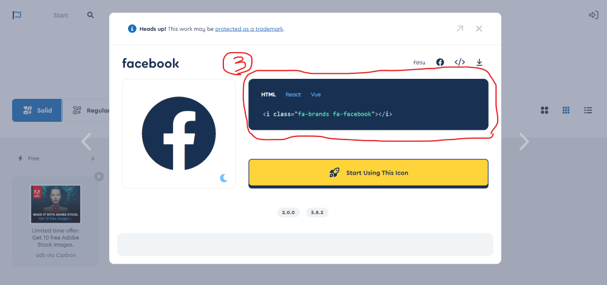

아이콘 폰트 적용하기 : 다양한 아이콘을 이미지 파일이 아니라 CSS를 적용하는 방식으로 사용할 수 있음
자세한 설명
대표적인 아이콘 폰트로는 Font Awesome과 Material Icon이 있다 (여기서는 Font Awesome 사용)
Font Awesome을 적용하는 방법 2가지
- 방법 1 : Font Awesome 사이트에서 아이콘 폰트 라이브러리를 내려받아 추가하는 방법
- 방법 2 : CDN(Content Delivery Network)을 사용해 서버에 올려진 파일을 참조하는 방법
여기서는 CDN 방법으로 진행하고, CDNJS에서 제공하는 파일을 참조할 예정 (
해당 사이트에서 제공하는 Font Awesome 라이브러리 주소)
- 위의 주소 (주소)로 가서 화면 중간에 보이는 CDN 주소 복사 후 복사된 코드를 HTML 파일의 head 태그 안에 link 태그를 만들어서 href 속성값으로 붙여넣기
- Font Awesome 사이트(https://fontawesome.com/icons)로 가서 검색창에 검색어 입력 후 원하는 아이콘 클릭
- 팝업으로 열린 아이콘 상세 페이지에서 HTML 탭 클릭 후 보이는 i 태그를 복사(i 태그 클릭)해서 HTML 문서에 붙여넣기
아이콘 :



아이콘 폰트는 웹에서 텍스트로 취급되기 때문에
font-size 속성이나 color 속성으로 폰트의 크기를 키우거나 색을 변경할 수 있음